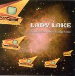

| Artist: | Lady Lake |
| Title: | Supercleandreammachine |
| Label: | Musea FGBG4603 |
| Length(s): | 55 minutes |
| Year(s) of release: | 2005 |
| Month of review: | [01/2006] |
| 1) | The Untold Want | 14.05 |
| 2) | Doo Dah Damage | 7.17 |
| 3) | Wet Sounds | 5.05 |
| 4) | Ford Theatre | 11.02 |
| 5) | No One Will Ever Know (fare Thee Well) | 6.05 |
| 6) | The Chief | 5.50 |
| 7) | Radio Reminiscence | 4.44 |
| 8) | Children's Playground Revisited | 0.36 |
In order to make instrumental music interesting, the different numbers have to be balanced in a way quite different from that of vocal music. This is where most go wrong, or at least so in my opinion, leading to a degree of boredom that is too strong to ignore. This is a point at which Lady Lake score considerably better than your average (or mine, for that matter). The music is tranquil at moments, than picking up speed or strength. It is finding the balance in doing so which for a large part determines the degree to which instrumental music satisfies. Don't get me wrong, Lady Lake still falls short in creating the type versatility that really gets my attention, and for which, granted, vocals are needed almost always. And, during the second half of the album this starts taking its toll, especially on the melodic sections, which all feature more or less the same guitar sound, making me long for the frequent bits in between, bringing on the variation I miss at other moments.